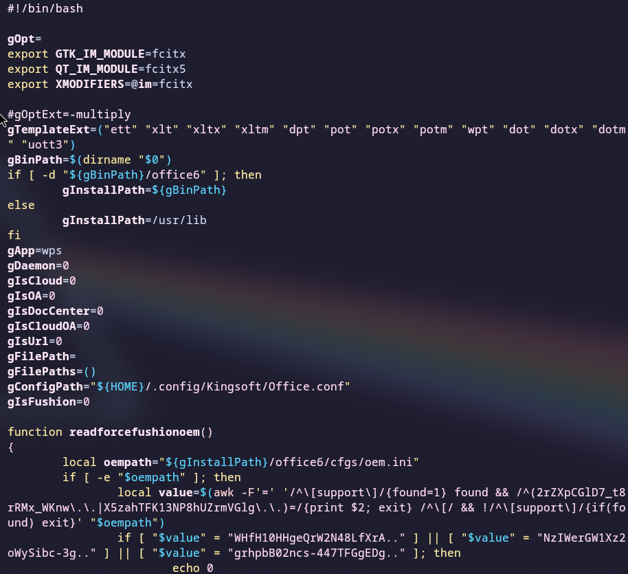
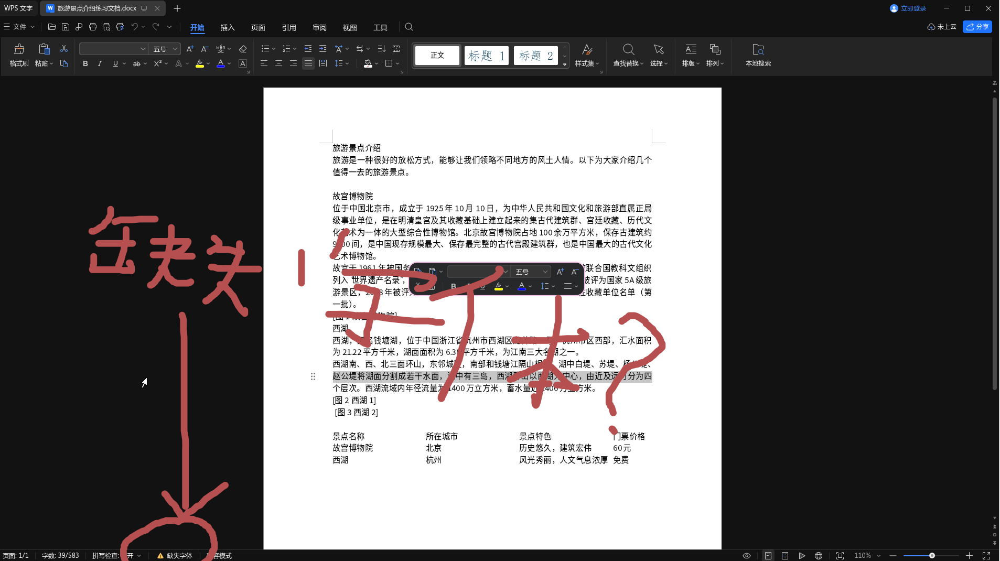

Linux 版 WPS 简介
下面是 Arch Wiki 的描述
WPS Office for Linux 是金山公司推出的、运行于 Linux 平台上的全功能办公软件。与 Microsoft Office 高度兼容，且更加尊重 Linux 用户特定的使用习惯，并自带方正字体集。
安装 WPS
WPS Office for Linux 根据不同的需求被打包成了：
| 软件包名称 | 说明 |
|---|---|
| wps-office-cn | WPS |
| wps-office | WPS 国际版 |
| wps-office-365 | WPS 365 |
| wps-office-365-edu | WPS 365 教育版 |
国内用户推荐安装 wps-office-cn。
# 安装 wps 和
yay -S wps-office-cn
设置中文
因为 wps 默认是英文且不自带中文语言包，还需要安装中文语言包 wps-office-mui-zh-cn。
# 安装中文语言包
yay -S wps-office-mui-zh-cn
安装好语言包后，使用编辑器打开 $XDG_CONFIG_HOME/Kingsoft/Office.conf (如果系统没有定义$XDG_CONFIG_HOME， 改成 ~/Kingsoft/Office.conf 就行) 文件添加以下内容，重启后即可显示中文：
[General]
languages=zh_CN
Fcitx5 输入法配置
如果你在 wps 中无法使用 Fcitx5 输入法，可以试试下面的方案
# 编辑 wps 的启动脚本
sudo vim /usr/bin/wps
把下面内容添加到 gOpt= 下面
export GTK_IM_MODULE=fcitx
export QT_IM_MODULE=fcitx5
export XMODIFIERS=@im=fcitx

解决字体缺失问题

可安装 WPS 字体如：ttf-wps-fonts 或 ttf-wps-win10 或 wps-office-fonts 或 wps-office-365-edu-fonts（针对wps-office-365-eduAUR）解决。
# 推荐安装 `ttf-wps-fonts`
yay -S ttf-wps-fonts
💬 评论